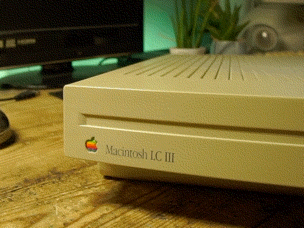

a video by:
Alex T
featured music:
"sinus" by lemonade
"coolfunky" by ida deerz
"TOWN.MID" composed by Nathan Grigg
originally bundled in Windows Me and later
and the song I attempted to play on the LC III:
"Dreamy Nights (Remix)" by Kenny Chou
a very good tracker song, would recommend giving it a listen!!
video originally made for:
#MARCHintosh2023
thank you for watching :D